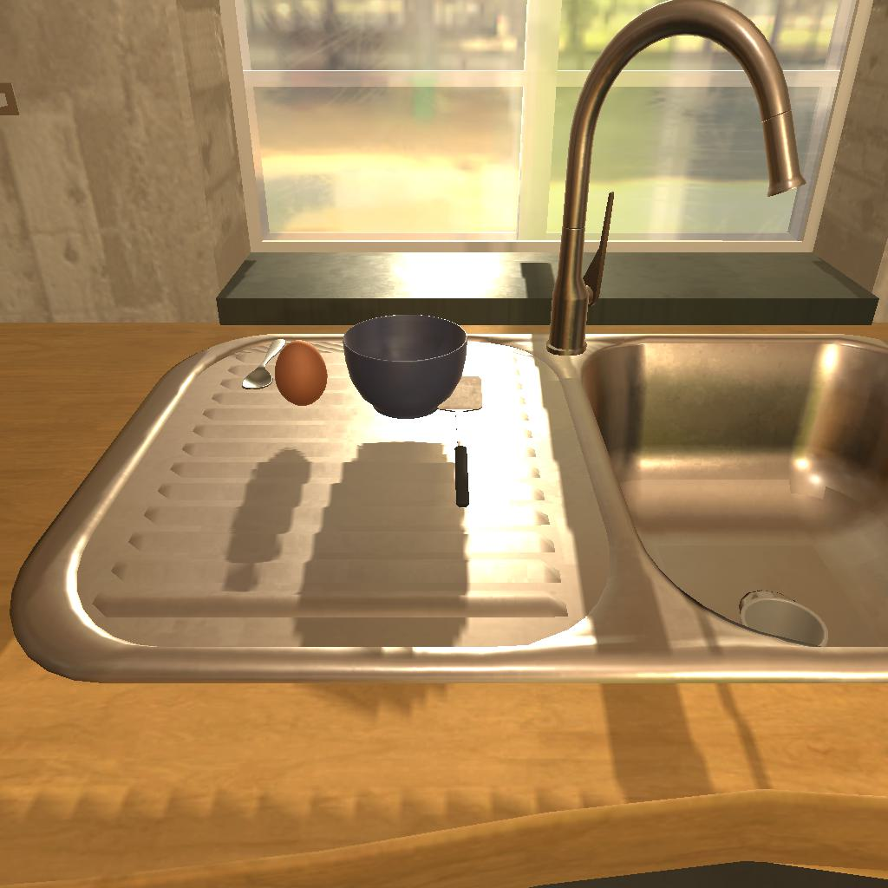

---------------------------------------------------------task: 26---------------------------------------------------------
--------------------------------------------------------------------------------------------------------------------------------------------------------------------
--------------------------------------------------------------------------------------------------------------------------------------------------------------------
Step:--------------------------------------------------------------------------0-------------------------------------------------------------------------------
----------------------------------------
VLM Prompt:
Image1:
**Instruction**
1. Analyze the provided images to identify all visible household objects and compare the difference between images (e.h. whether the object is opened or not and taken on hand or not), focusing on those relevant to the task description "find two kettle and put them in cabinet."
2. Use the analysis of images and the task hint "The agent must find an object of the desired type, pick it up, find the correct location to place it, put it down there, then look for another object of the desired type, pick it up, return to previous location, and put it down there with the other object." to answer the question: what is the most reasonable action in the choices for the task description "find two kettle and put them in cabinet"?
3. Decide and write the answer using the template: The answer is: (i): , where i is the real number. If there is no desired object in images, search every place based on **Initial Observation** to find the object. And if no one is exactly correct, choose a similar answer.
**Initial Observation**
You are in the middle of a room. Looking quickly around you, you can see countertop (1), coffeemachine (1), cabinet (1-4), drawer (1-8), sink (1), sinkbasin (1), garbagecan (1), fridge (1), microwave (1), dresser (1), sidetable (1)
**Answer Choices**
(1): go to countertop 1
(2): go to coffeemachine 1
(3): go to cabinet 1
(4): go to cabinet 2
(5): go to drawer 1
(6): go to sink 1
(7): go to sinkbasin 1
(8): go to cabinet 3
(9): go to garbagecan 1
(10): go to cabinet 4
(11): go to drawer 2
(12): go to fridge 1
(13): go to microwave 1
(14): go to dresser 1
(15): go to sidetable 1
(16): go to drawer 3
(17): go to drawer 4
(18): go to drawer 5
(19): go to drawer 6
(20): go to drawer 7
(21): go to drawer 8
**Answer**
Let's think step by step by following the instructions.
----------------------------------------
----------------------------------------
Original Response:
Image1:
There is no kettle visible in the image. Objects visible are a sink with a drying rack, an egg, a bowl, a knife, and a window with a view outside.
Based on the task description "find two kettle and put them in cabinet," the most reasonable action would be to search for the kettles in locations where they are likely to be stored when not in use. Since kettles are typically stored in cabinets or on countertops, we can eliminate options that are irrelevant to the storage of kettles, such as the coffeemachine, sink, sinkbasin, garbagecan, fridge, microwave, dresser, and sidetable.
Given the initial observation that there are cabinets numbered 1-4, the most reasonable actions would be to check each cabinet for the kettles. Therefore, the best course of action would be to go to cabinet 1, then proceed to check cabinet 2, 3, and 4 if the kettles are not found in cabinet 1.
The answer is: (3): go to cabinet 1. If the kettles are not found there, continue to check cabinets 2, 3, and 4.
----------------------------------------
----------------------------------------
>>> Refine Original VLM Response and Get Pure Action: go to cabinet 1
----------------------------------------
-----------------------------------------------------------------
Running time: 14.730030298233032 seconds
Total Money: 16.062260000000002
-----------------------------------------------------------------
-----------------------------------------------------------------
Text Observation:You arrive at loc 2. The cabinet 1 is closed.
-----------------------------------------------------------------
UNSUCCEED